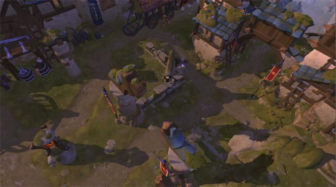

Albion Online – это кроссплатформенная игр, которая поддерживает такие платформы как Android, Windows, Mac и Linux. И в отличие от других подобных ММО, игроки Альбиона играют на одном сервере с любой платформы. Это значит, что вы можете подключиться к игре с любой точки мира (кончено, если у вас есть смартфон и интернет).
10 апреля 2019 игра вышла на модель оплаты free-to-play. Это значит, что возможность присоединиться к миру Альбион онлайн есть у каждого. Разработчики тщательно подготовились к этому переходу и запланировали на 2019 год много обновлений контента. В основном эти обновления направлены на улучшение качества жизни игроков и систему опыта. Они также увеличат разнообразие возможных игровых действий.
Примечание №1: бесплатные аккаунты Albion Online не будут ограничены от всех внутриигровых действий.
Примечание №2: Бизнес-модель Albion не изменится после релиза free-to-play. Это значит, что в игровом магазине не будут доступны предметы pay-2-win. Премиум-статус также не измениться, и будет доступен для покупки как реальные деньги, так и за игровую валюту.
Кстати, о премиум-статусе Albion Online. Это дополнительная игровая функция, которую можно приобрести по желанию за реальную или игровую валюту. Он даст вам различные бонусы и сделает процесс игры намного быстрее. Но прежде, чем вас обескуражить и заявить о платном контенте, предлагаю вам обратить внимание на тот факт, что Премиум можно купить за Серебро, которое добывается внутриигровыми действиями. То значит, что вы без лишних трат сможете стать владельцем премиум-аккаунта. Вы также можете купить премиум один раз и, таким образом, увеличить свои возможности фарма серебра; это позволит вам увеличить премиальное время, уже без дальнейших трат.
Как и требовалось от ММО-песочницы, Albion Online не ограничивает своих игроков при выборе класса для персонажа. Можно сказать, что в Альбионе в принципе нет классов, а ваши способности и навыки зависят только от типов предметов, которыми вы себя экипировали. Основными типами брони являются Латные доспехи (Plate Armor), Кожаные доспехи (Leather Armor) и Тканевые доспехи (Cloth Armor) (эти доспехи в свою очередь бывают восьми разных уровней, каждый из которых имеет свои требования к персонажу). Количество способностей, доступных в типе брони, зависит от ее уровня – чем выше уровень, тем больше дается возможностей. Типы брони делятся на подклассы, и каждый подкласс обладает уникальным набором способностей.
Существует в Albion Online также множество видов оружия для ближнего и дальнего боя (здесь применена та же система умений и способностей, что и по отношению к броне). Все эти элементы можно смешивать и совмещать, так что в игре по сути возможно применить множество разных вариаций для настройки персонажа. Если вы играете с экипированным типом доспехов, то сможете повысить ваше мастерство в использовании этих доспехов. Чем выше будет уровень этого мастерства, тем более качественную броню вы сможете в дальнейшем носить. Более подробно мы этот аспект осветим в другом разделе статьи.
Помимо доспехов, игра также предлагает наборы Gatherer, которые следуют аналогичной системе умений/способностей и значительно улучшают навыки сбора. Эти наборы разработаны с учетом выживания, и поэтому смогут дать хорошую защиту персонажу.
Несложно представить, что система снаряжения Albion Online делает внутриигровой процесс и индивидуальную настройку персонажа очень интересными. На старте все может показаться немного запутанным, но полноценное исследование Albion открывает игру совсем с другой стороны. Детальное описание всей системы экипировки может потребовать более обширное руководство, который, возможно, когда-то мы и сделаем.
Доска достижений (по умолчанию клавиша N) позволяет развивать персонажа с помощью разблокировки различных умений. Здесь вы также можете наблюдать и планировать свой прогресс. Доска информирует вас о том, какие действия необходимо выполнить, чтобы получить доступ к большому количеству навыков, более мощному снаряжению и лучшим ресурсным узлам. Она предоставляет вам различные пути развития, и вы можете выбрать любой из них. Основная идея Доски достижений заключена в постоянном повторении внутриигровых действий, в результате чего повышается ваш навык. К примеру, чем больше вы сражаетесь оружием, тем больше умений для этого оружия вам открывается; а чем больше умений вам открывается, тем более сложных противников вы сможете одолевать. Несмотря на то, что Доска достижений не ограничивает ваш прогресс, освоение всех ее областей займет невероятно большой промежуток времени. Чтобы стимулировать специализацию персонажей (а это очень важно для разнообразия в игре), Лоска поддерживает узко сфокусированные билды. Это делает персонажей намного сильнее, чем освоение всего сразу.
Поддержка билдов проходит через Доску мастерства, которая является подразделом Доски достижений. Через Доску мастерства вы улучшаете свои боевые способности с помощью брони и заклинаний. Каждый уровень того или иного Мастерства увеличивает силу используемого предмета и немного силу других предметов, которые стоят в том же ответвлении. Есть четыре направления, в которых могут развиваться Мастерства:
Фермерство – освоение навыков фермера позволит вам более эффективно использовать свои фермы, пастбища и сады.
Сбор ресурсов – освоение этого направления увеличит скорость вашего сбора и урожайность. Это мастерство также улучшит бонусы Gathering Gear, связанные с инструментом, который вы освоили.
Крафт – освоение этого мастерства позволит повысить эффективность крафта и увеличит шанс на создание предмета более высокого качества.
Боевое направление – освоение этих навыков увеличат ваш урон, наносимый определенным типом оружия. Улучшение оружейных и защитных навыков значительно повысят эффективность при ношении выбранного снаряжения.
Скорость освоения Доски достижений Albion Online увеличивается, если приобретен статус Премиум. Премиум-персонажи генерируют 20 очков обучения в день. Очки могут быть использованы для разблокировки 4-го уровня и более высоких частей дерева (это значить, что вы не можете, купив премиум, разблокировать все; вместо этого вам придется разблокировать путь к 3-ему уровню вручную). Пожалуйста, помните, что все умения и способности на Доске достижений можно разблокировать вручную, и все очки обучения – это лишь ускорение процесса.
Разблокировка узла на Доске достижений проходит следующим образом:
доска показывает, что необходимо сделать, чтобы разблокировать тот или иной узел;
Вы выполняете указанные действия достаточное количество раз (каждое завершение приносит определенное количество очков Славы)
Вы разблокируете узел, получив достаточно Славы.
Первые 20% прогресса должны быть выполнены вручную, а остальные 80% могут быть добиты либо вручную, либо за счет очков обучения
Примечание: Слава начисляется за взаимодействие с миром Альбиона. По сути, это своеобразная замена опыта в игры.
Albion – суровая игра. После смерти ваш персонажа оставит всю экипировку и другие предметы, а это значит, что смерть в игре может быть очень болезненным событием. Поэтому стоит рассчитывать свои силы и играть в местах, соответствующих вашему уровню. Для такого расчета мир Альбиона разделен на зоны, которые в свою очередь разделены на 4 типа. Каждый тип имеет свои различные правила введения PvP. Это значит, что в одних частях мира вы будете в полной безопасности, а других – под постоянной угрозой. Сейчас мы все по порядку вам объясним.
Типы зон Albion Online тесно связаны с системой репутации. Эта система отслеживает поведение игрока на игровой поле и наказывает любые неоправданные боевые действия против других. Существует 10 уровней репутации (4 положительных, 1 нейтральный и 5 отрицательных), и чем ниже репутация игрока, тем жёстче налагаются на него ограничения в плане перемещения по зонам. Низкая репутация, естественно, сильно ограничит свободу в игре, не позволяя входить в определенные города и целые зоны (это может препятствовать быстрому перемещению по территории Альбиона и заставлять преодолевать большие расстояния пешком). Все это делает ради безопасности других игроков.
Примечание: Репутацию игрок достигает путем выполнения определенных внутриигровых действий (точно также, как и в случае очков Славы). Вы получаете репутацию, убивая монстров, выращивая урожая, собирая ресурсы, создавая предметы и сражаясь с враждебными игроками. Добыть репутацию намного сложнее, чем ее потерять, нарушая покой других игроков. Поэтому будьте осторожней и не делайте опрометчивых действий.
Теперь давайте подробней рассмотрим различные типы зон, ограничения доступа к ним, а также подробнее опишем уровни репутации и сделаем небольшое руководство.Тип зоны
Теперь рассмотрим уровни репутации и где они допускаются:
Великолепный (Репутация больше 10000): синяя, желтая, красная, черная зоны;
Благородный (Репутация больше 5000): синяя, желтая, красная, черная зоны;
Добродетельный (Репутация больше 1500): синяя, желтая, красная, черная зоны;
Уважаемый (Репутация больше 500): синяя, желтая, красная, черная зоны;
Нейтральный (Репутация больше 0): синяя, желтая, красная, черная зоны;
Подозрительный (Репутация меньше 0): синяя, желтая, красная, черная зоны;
Позорный (Репутация меньше -1000): желтая, красная, черная зоны;
Подлый (Репутация меньше -3000): желтая, красная, черная зоны;
Гнусный (Репутация меньше -10000): желтая, красная, черная зоны;
Ужасный (Репутация меньше -20000): черная зон
а.
Примечание: Зоны также делятся на уровни. Уровень зоны показывает насколько она сложна, какие уровни материалов на ней доступны и так далее. Зоны более высокого уровня (красная и черная) имеют более низкие ограничения PvP, чем зоны низкого и среднего уровня (синяя и желтая).

Боевая система Альбиона по своей сути довольно прочная и простая. Она предлагает стиль на подобии MOBA, и сочетает его с уникальной системой навыков, напрямую зависящей от брони и оружия. Здесь есть место рукопашному бою, битве оружием, коварным засадам или тотальным сражениям гильдии на гильдию. Игра не станет вам навязывать единый и стандартный стиль игры в PvP, поэтому вы можете свободно экспериментировать с боевой системой.
Ограниченное количество умений, которое вы можете освоить, превращает сражение «один на один» в своеобразную интерпретацию игры «камень-ножницы-бумага». Например, если вы ориентируете свои умения на дальний бой, ваши возможности будут ограничены в ближнем бою. Это происходит потому, что вам пришлось пожертвовать некоторыми наступательными навыки и заменить их на CC и ловушки. Вы также можете противостоять игроку ближнего боя с дальнего расстояния, но можете встретить хорошую конкуренцию со стороны такого же бойца дальнего боя. Эта история повторяется для персонажей ближнего боя: они могут сражаться с игроками дальнего боя вблизи, но могут встретить хороший отпор в лице себе подобных себе ближнебойных воинов. В общем, комбинаций очень много.
Есть еще один фактор, который делает эту систему уникальной и удобной: вы можете на лету менять настройки своего оборудования и навыков. Это значит, что ваш персонаж дальнего боя может тут же облачиться в ближнебойного воина или целителя. Как вы уже поняли, боевая система Albion имеет множество разноплановых возможностей для настройки, и это делает игру еще более привлекательной.
Сбор – это важный аспект игры почти для каждой ММОРПГ, и Albion Online здесь ничем не отличается. Профессии сбора имеют такую же систему навыков, как и уровни брони (чем больше вы собираете, тем эффективнее и опытнее становитесь). Для всех профессий сбора требуется специальный инструмент, а уровень инструмента определяет максимальный уровень ресурсов, которые можно им собрать без штрафов за время сбора и мастерства (это значит, что сбор ресурсов, которые выше вашего уровня, очень неэффективен). В Альбионе есть 5 основных профессий по сбору и ловле рыбы (которые отличаются и имеют лишь 2 узла на Доске снаряжения вместо 7, как в других профессиях):
Рыбак – как следует из названия, рыбаки используются на рыбалке. Рыбалка довольно уникальна с точки зрения сбора и имеет специальную мини-игру. Мини-игра представляет собой тест баланса: она требует, чтобы вы держали маркер в зеленом поле, расположенном между двумя красными полями (это делается нажатием правой и левой кнопки мыши; каждая из кнопок заставляет маркер двигаться в соответствующую сторону). Если баланс выдержать не удалось, вы терпите, естественно, неудачу. Для рыбалки требуется удочка и дополнительное снаряжение, которое увеличивает ваш улов.
Егерь – эта профессия ориентирована на сбор животных шкур. Шкуры собираются с помощью специального ножа для снятия шкур с мертвого животного (для этого вам нужно или самостоятельно убить животное, или попросить кого-то это сделать за вас; из-за такого положения дел сбор кож немного сложнее, чем другие профессии сбора), вследствие чего шкура перенесется в инвентарь как отдельный предмет. Каждый новый уровень егеря на Доске достижений откроет вам доступ к лучшему инструменту и снаряжению (для уровня 4 и выше).
Жнец – они специализируются на сборе волокна с помощью серпа. Волокно может быть переработано в ткань, которая используется для крафта. Каждый новый уровень жнеца, открываемый на Доске достижений, позволит вам использовать лучше инструменты и собирательное снаряжение (для уровня 4 и выше)
Дровосек – эта профессия собирает древесину, которая перерабатывается в доски. Последние, в свою очередь, необходимы для строительства зданий, создания мебели и некоторых видов оружия, и это делает их очень ценным ресурсом. Каждый разблокированный уровень профессии дровосека позволит вам использовать лучшие инструменты (для уровня 4 и выше).
Рудоискатель – они используют свои навыки для извлечения минералов из рудных жил. Извлеченная с помощью кирки руда может быть переработана в металлические слитки, которые используют для изготовления оружия, доспехов и мебели. С повышение уровня этой профессии вам будет открываться лучшее инструменты и снаряжение (для уровня 4 и выше).
Каменотес – эта профессия сбора специализируется на сборе камня. Инструмент, которым пользуется каменотес – это каменный молот. Камни перерабатывают в каменные блоки, которые применяют в строительстве зданий и изготовлении отбойных молотков. Каждый новый уровень этой профессии позволит вам использовать лучшие инструменты и снаряжение (для уровня 4 и выше).
Лучшей подборки профессий для экономической системы игры не подобрать. Все цены на ресурсы изменчивы и почти наверняка будут иметь различия в зависимости от города. Это значит, что прежде, чем выбрать профессию персонажу, изучите рынок и выберете себе подходящий вариант. К примеру, выберете ту профессию, которая будет соответствовать вашим будущим целям крафта, или ту, которая будет лучше подходить окружению вашего города, ведь быть дровосеком в степи не самая лучшая идея.
Примечание 1: Каждый из ресурсов преобладает в определенном биоме. Каждый из биомов имеет свой основной (которого больше всего), второстепенный (в достаточном количестве) и третьестепенный (в небольшом количестве) ресурс:
Леса: древесина (очень много), шкуры (достаточно) и камень (мало);
Степи: шкуры (очень много), волокно (достаточно) и руда (мало);
Болота: шкуры (очень много), волокно (достаточно) и древесина (мало);
Холмы: руда (очень много), древесина (достаточно) и камень (мало);
Горы: волокно (очень много), руда (достаточно) и камень (мало).
Примечание 2: Уровни ресурсов, доступных в зоне, зависят от уровня самой зоны. Это означает, что высокоуровневые ресурсы доступны только в красных и черных зонах, что, в свою очередь, делает их добычу опасной. Но это того стоит, так как цена у таких ресурсов на порядок выше. Стоит также отметить, что сбор ресурсов более высокого уровня требует больше времени, а это увеличивает вашу уязвимость во время процесса сбора в опасных зонах.
Примечание 3: Все ресурсные узлы (от уровня 4 и выше), кроме разве что каменных, могут быть зачарованы. Такие узлы могут дать вам зачарованные ресурсы, которые пользуются высоким спросом и дают вам больше Славы. Каждая зона имеет свою собственную скорость наложения чар. Есть три уровня зачарованных узлов:
Зеленый (Необычный) – дешевый, но хорошую прибыль от таких ресурсов все-таки получить можно, если собирать их в больших количествах;
Синий (Редкий) – они намного дороже предыдущих и будут стоить приличной суммы;
Розовый (Исключительный) – самый редкий и соответственно самый дорогой вид зачарованных ресурсов; здесь ходят нешуточные деньги.
Крафт – неотъемлемая часть игрового процесса Альбион. Он позволяет вам конвертировать собранные (или купленные) материалы в экипировку и оружие, и это, как правило, дешевле, чем покупать вещи, сделанные кем-то другим. Тем не менее, крафт требует очень много времени и ресурсов, и дотянуть его до надлежащего уровня довольно сложно. Крафтом занимаются на специально оборудованных станках, которых, к слову, четыре: слесарка, охотничий домик, кузня, магическая башня. Каждый их этих станков представляет различные ремесленные ветви.
Когда дело доходит до крафта, есть несколько важных вещей, которые вы должны знать:
Как уже упоминалось, повышение уровня крафта требует много времени и ресурсов. Но есть несколько способов ускорить этот процесс. Изучение сделанных вами предметов относится к таким. Когда вы изучаете предмет, вы получаете не менее 200% от его Славы крафта (Крафтовая слава дается за создание предмета. Вы должны собирать достаточно ее, чтобы продвинуться дальше по ветви крафта). Это утроит вашу скорость вашего продвижения по ремеслу. Есть, конечно, у всего этого и обратная сторона: после изучения предмет уничтожается.
Примечание: Предметы можно изучить только на соответствующих станках для крафта, и вы получите Славу за изучение предмета равноценно вашему текущему уровню крафта.
Коэффициент возврата материалов, использованных в процессе карфта, можно увеличить, активировав фокус крафта. Это позволяет вам делать крафт намного эффективнее, и в основном его можно описать как свободные деньги/материалы, полученные от крафта. Фокус требует Премиум-статуса и постепенно перезаряжается со скоростью 10000 очков в день. Количество этого фокуса, потребляемого каждым сфокусированным ремеслом, можно проверить в окне крафта. Бонус возврата, который дает Фокус, варьируется от 45 до 47%. Его следует по возможности использовать на дорогих в изготовлении предметах, поскольку это значительно повышает вашу эффективность.
Качество созданного предмета определяется случайным образом, но есть способы повысить вероятность выпадения высокого качества. Поедание пищи, которое обеспечивает лучшие крафт-бонусы, является первым таким способом, а повышение уровня специализации крафта – вторым. Высококачественные предметы имеют гораздо более высокий уровень мощности, чем их стандартные аналоги, и пользуются гораздо большим спросом. Именно поэтому повышение вашей специализации в крафте очень важно.
Качество созданного предмета определяется случайным образом, но есть способы повысить вероятность выпадения высокого качества. Поедание пищи, которое обеспечивает лучшие крафт-бонусы, является первым таким способом, а повышение уровня специализации крафта – вторым. Высококачественные предметы имеют гораздо более высокий уровень мощности, чем их стандартные аналоги, и пользуются гораздо большим спросом. Именно поэтому повышение вашей специализации в крафте очень важно.
Сила создаваемого предмета увеличивается по мере того, как вы продвигаетесь по Доске достижений.
Предметы, изготовленные из зачарованных материалов, обладают сильными бонусами, и это делает их очень ценными (но и более дорогими в изготовлении). Как вы уже поняли, тратить очки фокуса на зачарованные ремесла очень выгодно.
Примечание: Для создания зачарованного предмета все его материалы должны иметь одинаковый уровень зачарования (необычный, редкий или исключительный).
Систему личных островов можно сравнить с «жильем игрока» в других ММОРПГ. На этих островах игроки Альбиона смогут создавать свои защитные крепости, которые будут оберегать их от всего враждебного мира. Вы являетесь полноправным хозяином своего острова и можете застраивать его по своему усмотрению. Здесь игрок получит возможность ставить здания, создавать фермы, выращивать пастбища и тому подобное.
Примечание: Игровые острова могут быть приобретены в игре за серебро только премиум-аккаунтами, поэтому для тех, кто играет на бесплатной основе, эта функция доступна не будет (если вы приобрели Премиум, но впоследствии не продлили его, то доступа к вашему личному острову не отключат).
Система Private Island предоставляет следующие возможности:
Пищевая промышленность;
Зельеварение;
Растениеводство;
Фермерство;
Животноводство (как для Маунтов, так и для еды).
Экономика Albion Online полностью проходит через игроков. Здесь все контролируется только живыми людьми, и каждый товар стоит ровно столько, сколько за него готовы заплатить. Однако есть одна очень важная деталь: все торговые центры являются местными, а это значит, что цены на предметы и ресурсы могут сильно отличаться в разных городах. Такое положение экономики создает добрую почву для торговых манипуляций, которые принесут вам немало прибыли.
Серебро движет всеми аспектами игры, и вам понадобиться хотя бы небольшое состояние, чтобы покрыть расходы и сохранить статус Премиум. У нас на сайте есть отдельный гайд про заработок в мире Альбион. Но если вы не желаете тратить время на долгий фарм, то обратитесь в онлайн-сервис RPGcash. Здесь вы сможете в достатке накупить серебра и сделать свою игру намного проще.